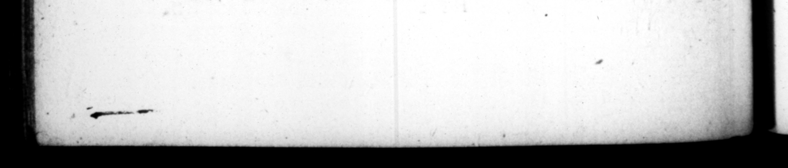

218 in qui apud ꝓrivatos judices .. Phd excidiſient, reſtit uit actiones: & in ma jore fraude 1 err lIguimam penam fupergrefſins ad beſtites condemnavit. to ſuch as wer ccomyict of any great villany, he would exceed the dun — and nde them to be ez 15. In cognoſcendo autem ac decernendo, mira vaxietate animi flit, modo circumſpectus & ſagax, modo inconſultus ac preceps: nonnunquam ' frivolus amentique fimtlis, Cum decurias rerum actu expungeret, eum qui diſſimulata vacatione quam beneticio liberorum ha Ons reſponderat, udi ut cupidum candi dimi ſit : "alium interpellatum ab adv exſariis de propria lite, 4 cognitionis rem, ſed ordinarii juris eſſe, agere cauſam * confeſtim apud ſe coegit, proprio negòtio documenram daturum, quam #quus judex in alieno negotio futurus eſſet. Foeminam non cfm filium ſuum, dubia utrimque argu. mentorum fde, ad confeſhonem compulit, indifto matrimenio juvenis. Abſeniibus ſecundum preſentes facillime dabat, nullo delectu, culpa ne quis an aliqua neceſſitate ceſſaſſer. Proclamante quodam, præcidendas falſario manus, carniticem ſtatim acc cum machæra menſaquelanionia flagitavit. Peregrinitatis eum, orta inter ad vocatos levi contentione, togatumne an palliatum dicere cauſam oporteret, quaſi æquitatem integram oſtentans, mutare habicum ſæpius, & prout accuſaretur Qdefendereturve, juſſir, De quodam etiam netio Ita ex tabella pronnntiaſſe creditur, SEC UNDUM EOS SE SENTIRE QUI VERA PROPOSUISSEAT. Propter que uſque eo eviluit c $UET. TRAY & OY and equity as he was aff perſons loſt their ſuits, by i more than a to be before the judges private calyſes anted them the favour of 6ringi [56 ver. again. And with 159 ”% ſed to wild beaſts,” 15. in the bearing and Aer minins of Cauſes, be td a frame variety of humour, being one "while cir, cumſpett and ena, anither while mconſiderable and the Judges lift, he firuc ] —— Bt Bo e be bad by nts chi laren, to be excuſed that ſervice that of of 1 fo own ſent for with a ſword and a butchers block. Aud one being projecuted falſely aſſuning to himſeif. the freed, of Rome, and a diſpute ariſing bet u 2 — — the 2 3 e t to mn #13 in — or the Grecian adreſs, to ſbew his great impartiality, be co him to change his cloaths ſeveral times, according as he was accuſed 1 defenden. It 15 4 ſtory told of bim, and believed too, that he didin 8 cr; tain cauſe deliver his jentence * | c
